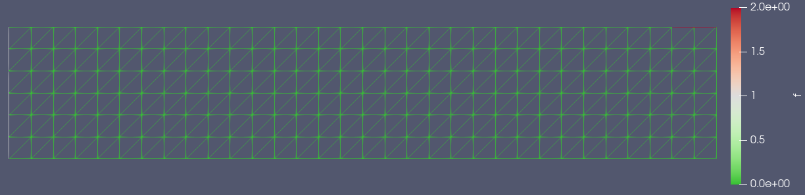
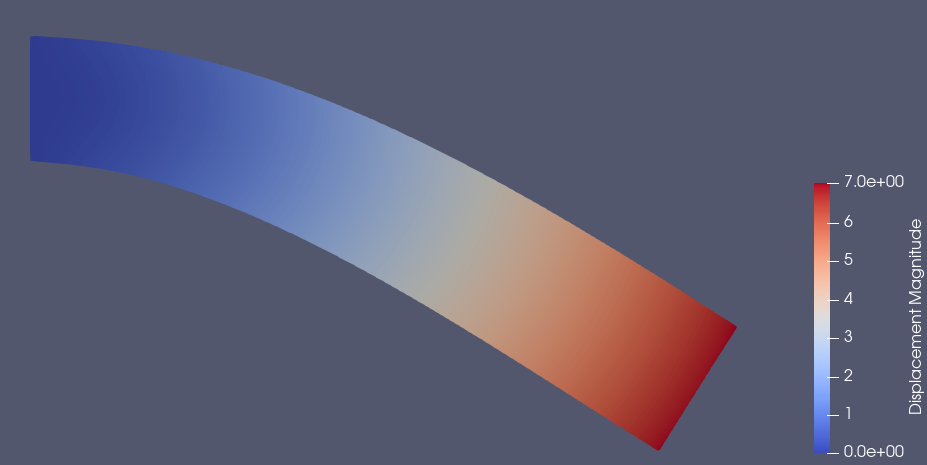

2D Cantilever Beam Simulation¶
The simplest mechanical deformation simulation we can run is the 2d cantilever beam. This beam consists of a rectangle of constant Young’s modulus, fixed on the left with a downwards load on the right. Let’s have this beam be \(16\text{mm}\) long in the x direction and \(3\text{mm}\) thick in the y direction:
from __future__ import print_function
import region_selector_2d as rs
from dolfin import *
length = 16.0 # [mm]
thickness = 3.0 # [mm]
resolution = 2 # [Nodes/mm]
resX = int(resolution * length) # Num nodes in x axis
resY = int(resolution * thickness) # Num nodes in y axis
mesh = RectangleMesh(Point(0.0,0.0), Point(length, thickness), resX, resY)
Now let’s label the mesh. The end of the beam at \(x=0\) should be fixed, and we will apply our load on the top of the beam, but only on the last millimeter farthest from the fixed end.
fixedRegion = rs.GetLinearBoundary.from_points(Point(0.0,0.0), Point(0.0,thickness))
loadRegion = rs.GetLinearBoundary.from_points(Point(length-1.0, thickness), Point(length, thickness))
boundaries = MeshFunction('size_t', mesh, mesh.topology().dim()-1)
boundaries.set_all(0)
fixedRegion.mark(boundaries, 1)
loadRegion.mark(boundaries, 2)
ds = Measure('ds', domain=mesh, subdomain_data=boundaries)
When we write the boundaries information to a file using this code:
folder_name = './2d_cantilever_results'
boundaryFile = File('%s/boundaries.pvd' % folder_name)
boundaryfile << boundaries
We can open the generated .pvd file in ParaView to see our mesh.
We can see that most of the mesh has a 0 value set to it, with the left side set to a value of 1 and the right part of the top edge of the rectangle set to a value of 2. This matches the values that we assigned to the mesh above.
We can now write our model for the deformation of the beam. There’s some math behind it, but we end up with the variational form
Which satisfies the boundary conditions, in this case that the displacement in the fixed region is 0. We implement this in Fenics fairly simply after defining some material properties:
E = 70000.0
nu = 0.3
mu = E / (2.0 * (1.0 + nu))
lmbda = E*nu / ((1.0 + nu) * (1.0-2.0*nu))
load = Constant((0.0,-1000.0)) # [N/mm]
def eps(u):
return sym(grad(u))
def sigma(u):
return lmbda*tr(eps(u)) * Identity(mesh.topology.dim()) + 2.0*mu*eps
V = VectorFunctionSpace(mesh, "Lagrange", 1)
du = TrialFunction(V)
u = Function(V, name="Displacement")
v = TestFunction(V)
a = inner(sigma(du), eps(v))*dx
L = dot(load,v)*ds(2)
bc = DirichletBC(V, Constant((0.0,0.0)), fixedRegion)
solve(a == L, u, bc)
We can view our results by printing u to an xdmf file:
u.rename("Displacement", "Displacement")
xdmf_file = XDMFFile('%s/results.xdmf' % folder_name)
xdmf_file.write(u,1.0)
If we open this xdmf file in ParaView, add a Warp By Vector filter, and set the coloring to be by displacement, this is the result we get:
